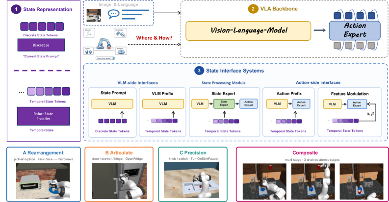
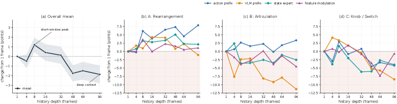

제출: 2026년 8월 4일 · 백본 π0.5 (파이-영-점-오, flow-matching VLA) 고정
한 줄 요약 (TL;DR)
같은 flow-matching(무작위 노이즈에서 정답 액션 궤적 쪽으로 흐르는 방향을 학습해 몇 스텝 만에 액션을 만들어내는 생성 방식) 백본 π0.5·데이터·평가 프로토콜을 고정한 뒤, 로봇 자기 상태(proprioceptive state, 관절각·엔드이펙터 자세·그리퍼 개폐 같이 로봇 자신이 스스로 알 수 있는 상태)를 어떤 형태로, 어디에 넣고, 얼마나 긴 과거를 함께 줄지를 통제 실험으로 비교. 단일 프레임(1개 시점) 조건에서는 discrete state prompt(sp)가 원자 태스크 평균 57.7%(무-state 베이스라인 54.6% 대비 +3.1)로 최고이며, 8프레임 히스토리를 넣으면 액션 쪽 삽입인 Action Prefix(ap)가 복합 태스크에서 39.0%(1프레임 28.2% 대비 +10.8)로 급등. 결론적 설계 지침: "단일 프레임 상태는 VLM(비전-언어 모델)에 넣고, 다프레임 히스토리는 액션 헤드로 보내라."
1배경 · 문제의식
VLA(Vision-Language-Action, 사진·언어 지시를 받아 로봇 액션을 내는 모델)들은 로봇 자기 상태(proprioceptive state)를 서로 매우 다른 방식으로 집어넣고 있다. 어떤 모델은 상태를 텍스트 토큰처럼 프롬프트에 이어 붙이고, 어떤 모델은 별도 분기(branch)에서 처리하며, 어떤 모델은 아예 사용하지 않는다. 이 배선 방식들은 상호 호환되지 않고, "상태를 어떤 표현으로, 어디에, 얼마나 과거까지 주입해야 하는가"에 대한 합의가 없다.
본 논문은 이 세 축(형태·위치·시간 깊이)에 대해 백본·학습 데이터·액션 표현·평가 프로토콜을 전부 고정한 통제 실험을 수행해, 향후 상태-인식(state-aware) VLA 설계에 재사용 가능한 지침을 도출한다.
2핵심 Contribution
3축 설계 공간 정리 — 상태 표현(이산 프롬프트 vs 연속 토큰) × 주입 위치(VLM 프리픽스 · 액션 프리픽스 · 별도 스트림 · 조건화 메모리) × 시간 깊이(1 ~ 96 프레임)의 3축을 정의하고, 각 축을 하나씩만 바꾸는 통제 실험 설계.
5개 대표 인터페이스 벤치마킹 — State Prompt(sp), VLM Prefix(vp), Action Prefix(ap), State Expert(se), Feature Modulation(fm)를 동일 백본(π0.5)·동일 데이터로 비교. 원자 태스크 45개 + 복합 태스크 20개(총 65 태스크) 상에서 성공률 측정.
Slot-matched control 실험 — 8프레임 히스토리 성능 향상이 "정보의 양(용량, capacity)" 때문인지 "시간 순서(temporal ordering)" 때문인지 구분하려고, 현재 상태를 8번 반복해 자리(slot)만 채운 대조군을 도입. 실제 순서 있는 히스토리가 반복 대조군보다 +8.2점 우세함을 확인.
설계 지침 도출 — "단일 프레임 상태는 VLM에 넣고, 다프레임 히스토리는 액션 헤드로 라우팅하라"라는 검증 가능한 지침을 제시. 조인트각 vs 엔드이펙터 좌표 선택은 부차적(secondary) 요인임을 실험으로 확인.
3Method
공통 스캐폴드 (모든 인터페이스가 공유하는 기반)
백본은 π0.5(Physical Intelligence 사의 flow-matching VLA). 멀티뷰 이미지 + 언어 지시가 VLM(비전-언어 모델)에 들어가 문맥 특징을 만들고, 이 특징이 action expert(액션 전용 서브네트워크, 노이즈로부터 액션 궤적으로 흐르는 벡터장을 학습하는 트랜스포머)를 조건화(condition)해 액션 청크를 출력한다. 상태를 어떻게 넣든 이 뼈대와 학습 데이터·목적함수는 그대로 유지된다.
상태 표현 (Representation)
원 상태 벡터는 16차원: 엔드이펙터 위치(3) + 회전 쿼터니언(4) + 모바일 베이스 자세 + 그리퍼 개폐값. 두 가지 표현을 비교한다.
이산 프롬프트(discrete): 각 차원을 256개 구간(bin)으로 양자화(quantize, 실수를 정수 코드로 변환)해 기존 텍스트 토크나이저로 직렬화 → 프레임당 약 66개 프롬프트 토큰.
연속 토큰(continuous): 16차원 상태를 2층 프로젝터(MLP)로 인코딩해 프레임당 1개의 연속 상태 토큰(주입 위치에 따라 d=2048 또는 d=1024)을 만든다.
5개 상태 인터페이스 (Where to inject)
왜 5개인가: 기존 대표 VLA들(π0·OpenVLA·GR-2·Diffusion Policy 등)의 실제 상태 배선을 중복 없이 대표하도록 5가지로 압축.
SP — State Prompt: 이산화된 상태 토큰(≈66개)을 텍스트 프롬프트에 이어 붙임. 기존 토크나이저 그대로 재사용.
VP — VLM Prefix: 프레임당 1개의 연속 상태 토큰(d=2048)을 VLM의 양방향(bidirectional) 프리픽스에 이미지·언어 토큰 뒤로 삽입. 상태가 VLM 문맥과 자유롭게 교차 주의(cross-attend).
AP — Action Prefix: 연속 상태 토큰(d=1024)을 액션 expert의 인과(causal) 접미부에서 노이즈 액션 토큰 앞에 배치. 상태가 액션 디노이징 전용으로만 참조됨.
SE — State Expert: VLM·액션 expert와 병렬로 도는 별도의 상태 처리 스트림을 추가. 상태 전용 트랜스포머 분기.
FM — Feature Modulation: 상태를 일반 시퀀스 토큰이 아니라 별도의 조건화 메모리(conditioning memory)로 유지해, 필요 시점에 특징을 변조.
시간 깊이 (Temporal depth) — 히스토리 인코딩
과거 K개 프레임을 함께 준다. K=1, 4, 8, 16, 32, 96 스윕(sweep, 값을 넓게 훑음). 히스토리는 비압축(uncompressed) 상태로 유지되며, K=8이 실용적 최적점.
Slot-matched repeat-current 대조군: K=8일 때 현재 상태만 8번 반복해 슬롯 수를 맞춘 대조군을 학습·평가. 이렇게 하면 성능 향상이 "슬롯 8개라는 용량 증가" 때문인지 "실제 시간 변화" 때문인지 구분할 수 있다. 결과: 진짜 히스토리가 반복 대조군 대비 +8.2점 우세 → 시간 변화 자체가 유효 신호.
학습 & 평가 프로토콜
백본
π0.5 (flow-matching VLA), 전 실험 동일
데이터
전 실험 동일 (인터페이스만 스왑)
액션 표현
고정(flow-matching action expert)
벤치마크
RoboCasa365 시뮬레이터 (Robotics Casa 벤치, 가정용 로봇 태스크 모음). 원자 태스크 45개(Family A/B/C 각 15개) + 복합 태스크 20개
평가
태스크별 성공률(SR, success rate)의 평균
4실험 결과
표 1 — 단일 프레임 상태(K=1), 원자 태스크 45개 평균 성공률
인터페이스
평균 SR (%)
ΔSR vs no-state
강점 태스크 계열
No state (베이스라인)
54.6
—
—
SP — State Prompt
57.7
+3.1
Family A(재배치): 68.7 (+7.0)
VP — VLM Prefix
56.8
+2.1
Family B(관절 조작): 68.8 (+6.1)
AP — Action Prefix
55.7
+1.1
—
SE — State Expert
57.6
+3.0
Family C(정밀): 42.8 (+3.3)
FM — Feature Modulation
57.6
+2.9
—
Family A = 재배치·픽앤플레이스(광범위 위치 지정), Family B = 관절 물체 조작(지속 접촉·모션 단계), Family C = 노브·스위치·가전 조작(작은 작업 공간에서 국소 정밀도 요구). 상태 주입은 어떤 방식이든 no-state보다 개선하나 편차 존재.
표 2 — K=1 vs K=8, 복합(composite) 태스크 20개 (EEF-pose 표현)
인터페이스
K=1 SR (%)
K=8 SR (%)
ΔSR (K=8 − K=1)
AP — Action Prefix
28.2
39.0
+10.8
VP — VLM Prefix
34.4
33.8
−0.6
SE — State Expert
25.8
28.0
+2.2
FM — Feature Modulation
27.8
32.2
+4.4
핵심 반전: 단일 프레임에선 VLM 쪽 삽입(VP)이 복합 태스크에서 앞섰으나(34.4), 8프레임 히스토리를 주면 액션 쪽 삽입(AP)가 +10.8이라는 압도적 개선으로 역전. VP는 오히려 소폭 하락(−0.6). → 다프레임 시계열은 VLM 문맥이 아닌 액션 헤드에서 소화되어야 한다.
표 계열 요약 — 원자 태스크에서도 K=1→K=8 시
원자 태스크에선 K=8이 인터페이스별로 +0.6 ~ +5.0 pt 개선을 보이나, 복합 태스크에서만큼 극적이지는 않음. 즉 히스토리 효과는 다단계 순서(sub-goal chaining)를 요구하는 태스크에서 특히 크다.
5Ablation (주요 발견)
히스토리 길이 스윕(1 → 96 프레임): 짧은 히스토리는 단일 프레임 대비 개선을 주지만, 더 깊은 비압축 히스토리는 추가 이득이 없고 결국 성능을 저하시킨다. K=8이 실용적 최적점.
Family별 히스토리 민감도:Family C(정밀 조작)는 긴 히스토리에서 크게 저하. Family A(재배치)와 B(관절)는 상대적으로 견고. → 태스크 성격에 따라 요구되는 시간 문맥의 폭이 다름.
Slot-matched 대조: 진짜 순서 있는 8프레임 히스토리가 "현재 상태 8회 반복" 대조군보다 +8.2점. 즉 성능 향상은 슬롯 용량이 아니라 시간 순서 정보 자체에서 온다.
상태 표현(관절각 vs 엔드이펙터): 결과가 정성적으로 유사하며 차이는 벤치마크 불확실성 내. 조인트/EEF 선택은 부차적(secondary) 설계 요인.
State-conditioned correction (그림 4 해석): 상태를 넣은 모델은 flow 궤적을 따라 액션을 세밀하게 재교정하는 정성적 증거가 관찰됨.
6핵심 Figure / Table

Figure 1 — 상태 설계 공간과 평가 스위트 개요. (1) 상태 표현: 이산 current-state 프롬프트 vs 연속 시간 토큰, (2) 공유 VLA 스캐폴드: 멀티뷰 관찰·언어 지시가 VLM에 입력되고 그 문맥이 action expert를 조건화, (3) 5개 상태 인터페이스(SP/VP/AP/SE/FM) 비교, 평가는 재배치(A)·관절(B)·정밀(C)·복합(D)의 4개 계열에서 수행. (원문 캡션 번역, 출처: arXiv:2608.03052)

Figure 2 — 단일 프레임 인터페이스별 marginal compute (로그 스케일). (a) 학습 시 샘플당 marginal GFLOPs, (b) 추론 10-step 정책 호출당 marginal GFLOPs. 성능뿐 아니라 계산 비용도 인터페이스 선택의 기준임을 보임. (원문 캡션 번역, 출처: arXiv:2608.03052)
Table 2 (K=1 vs K=8, 복합 태스크) — 논문의 핵심 지침 "단일 프레임은 VLM, 히스토리는 액션 헤드"의 근거표. VP는 K=1 최고(34.4)이나 K=8에서 하락(−0.6), AP는 K=1 최하위 수준(28.2)이나 K=8에서 +10.8로 역전.